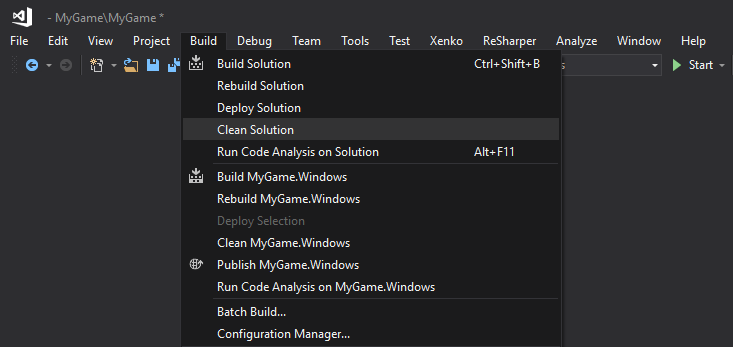
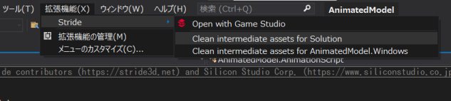
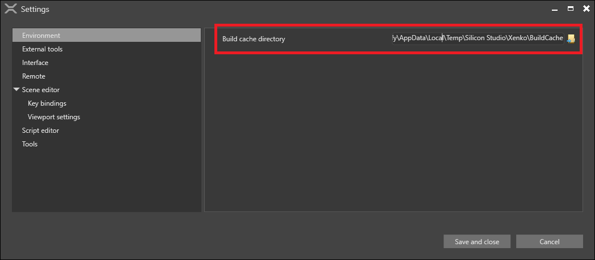
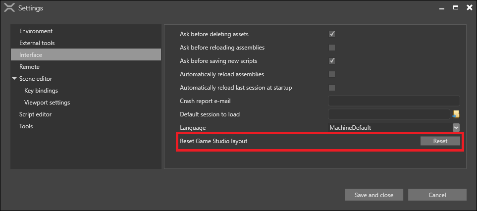

キャッシュされたファイル
プロジェクトをビルドすると、Stride はプロジェクト内のいくつかのフォルダにアセットとコードをキャッシュします。
次のような場合は、キャッシュを削除した方がいいかもしれません。
キャッシュがディスクの容量を使いすぎている。
アセットを編集または削除してもゲーム内でアセットが更新されない。
Visual Studio でキャッシュを削除する
コードキャッシュを削除するには、[ビルド] > [ソリューションのクリーン] を選択します。

Stride の Visual Studio 拡張機能がインストールしてあれば、アセットキャッシュも削除することができます。[拡張機能] > [Stride] > [Clean intermediate assets for Solution] を選択します。

キャッシュをゼロから再構築するには、プロジェクトをリビルドします。
手動でキャッシュを削除する
Visual Studio でのキャッシュの削除がうまくいかない場合は、手動でファイルを削除してみてください。
以下のフォルダを削除します。
バイナリキャッシュ： ~/MyGame/MyGame/Bin
アセットキャッシュ： ~/MyGame/MyGame/Cache
ゲームのプラットフォームフォルダーの中にある obj フォルダー（例：~/MyGame.iOS/obj）
Mac を使って iOS 向けに開発している場合は、~/Library/Caches/Xamarin/mtbs/builds/MyGame も削除してください。
キャッシュをゼロから再構築するには、プロジェクトをリビルドします。
Game Studio のキャッシュを削除する
Stride は、プロジェクト用のキャッシュの他に、Game Studio のエディター用のキャッシュも保持しています。
アセットキャッシュ
エディターでのアセットの読み込みを高速化するために、Game Studio はアセット参照のキャッシュを保持します。このキャッシュには、すべてのプロジェクトで読み込まれたすべてのアセットに関するデータが含まれます。これはすなわち、時間の経過とともに非常に大きくなる可能性があることを意味しています。
既定では、そのフォルダーは %temp%/Stride の中にあります。
Tip
Game Studio のキャッシュの保存先を確認または変更するには、[Edit] > [Settings] > [Environment] > [Build cache directory] を参照してください。

キャッシュを削除するには、このフォルダーを削除して Game Studio を再起動してください。
セッティングキャッシュ
Game Studio は、エディターの情報（ウィンドウの位置や最近開いたプロジェクトなど）を、%AppData%/Stride の中に保存します。
また、Game Studio は、開いているタブやエディターのカメラ位置の情報を、プロジェクトフォルダ内の .sdpkg.user ファイルに保存します（例：~/MyGame/MyGame/MyGame.sdpkg.user）。
これらのファイルは小さいですが、Game Studio の状態が悪くなったら削除した方がいいかもしれません。これらのファイルを削除しても、プロジェクトには何の影響もありません。
キャッシュファイルを削除した後に Game Studio を起動すると、既定の設定で新しいキャッシュが作成されます。
Tip
[Edit] > [Settings] > [Interface] > [Reset Game Studio layout] で、キャッシュをクリアせずに Game Studio のレイアウトをリセットすることもできます。
